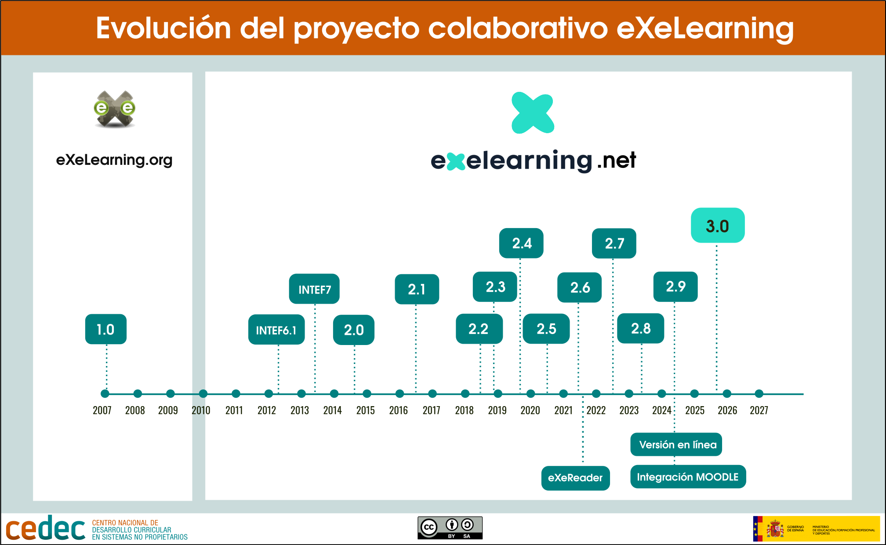

by eXeLearning It is a free and open source software program.open sourceDesigned for the Creation and editing of interactive digital resourcesIt is a tool that allows you to incorporate a wide variety of contents - texts, images, videos, interactive activities or games - in a simple and structured way, offering a clean and attractive look.
by CEDEC. by eXeLearning 3.0 (CC by-SA)
The tool is available in two modes:
- The installable version: to work locally
- The online version: It facilitates the quick editing and publication of content on the platform in which it is integrated.
The resources created with eXeLearning have design Responsive, ensuring their correct visualization on any device, and can be exported in standard formats such as HTML, SCORM or EPUB3, which favors their dissemination on platforms and repositories.
In addition, eXeLearning encourages the creation of Open Educational Resources (REA)Promoting shared knowledge and open education.
The origin of eXeLearning dates back to the 2000s, in the framework of the project by eXeLearning.org developed in New Zealand. in 2010, the by INTEF (Then ITE) assumed the development and promoted by eXeLearning.net The initiative of the initiative, the coordination of by CEDEC Since then, it has been consolidated as a collaborative project in which users, public administrations and other entities participate.
Over the years, the tool has experienced significant advances, incorporating improvements and functionalities and increasing the user community. an online version has been developed, facilitating its integration with Moodle, and other developments have been made such as the eXeReader visor.

The version 3.0 represents a great jump in the evolution of the tool. It implies the total renewal of the code and interface and incorporates great improvements in usability and functionality (such as collaborative work in its online version).
This development and its continuous improvements are the result of a close collaboration between the MEFPD and the regional educational administrations of Spain.
The collaborative project
The progress of eXeLearning is the result of a close collaboration between the Ministry of Education, Professional Training and Sports of Spain (MEFPD) – through the Cedec-INTEF – and various regional educational administrations, including Extremadura, Canary Islands, the Valencian Community, Galicia, Madrid and Andalusia.
The vitality of the project is also due to the active participation of your community, which contributes with contributions, errors and suggestions. The TelegramThere are doubts to be resolved and knowledge is shared openly.
The development of eXeLearning is managed fully openly in by GitHub, which acts as the project's neurological center. There, developers can:
- To set up a local environment in minutes using Docker commands (
docker run,docker execCloning the repository withgit cloneand usemake up. - View the full documentation in the directory
doc/. - Use the by makefile to simplify tasks such as starting / holding containers, running tests or updating translations.
- by Forkear the project, create branches, make changes and send Pull Requests.
The GitHub community is always available to resolve doubts and receive errors reports in the issuesThis open management strengthens the collaborative and constant improvement of eXeLearning.
You can learn more about the project in the section. The eXeLearning Project on the official website.